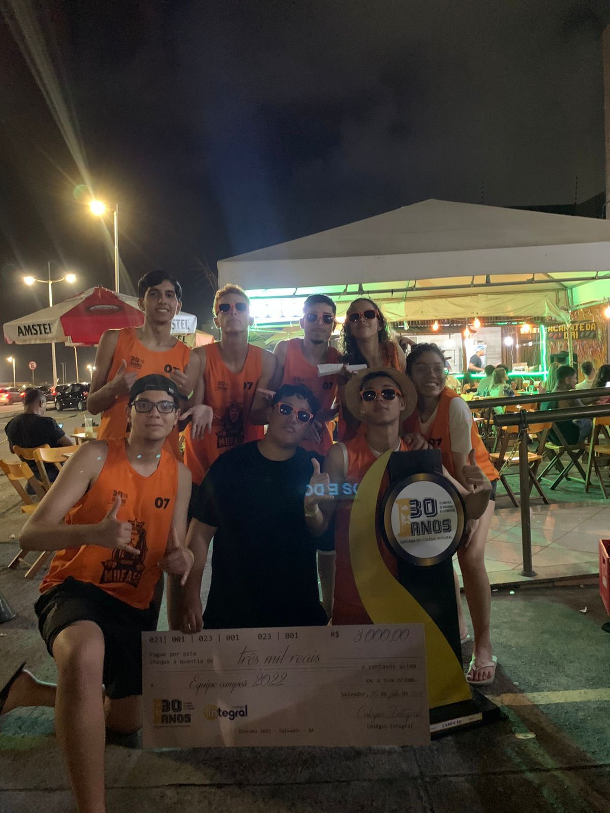
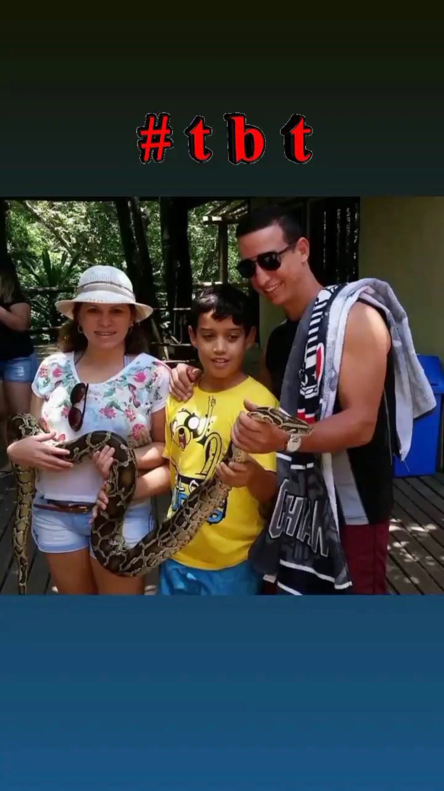
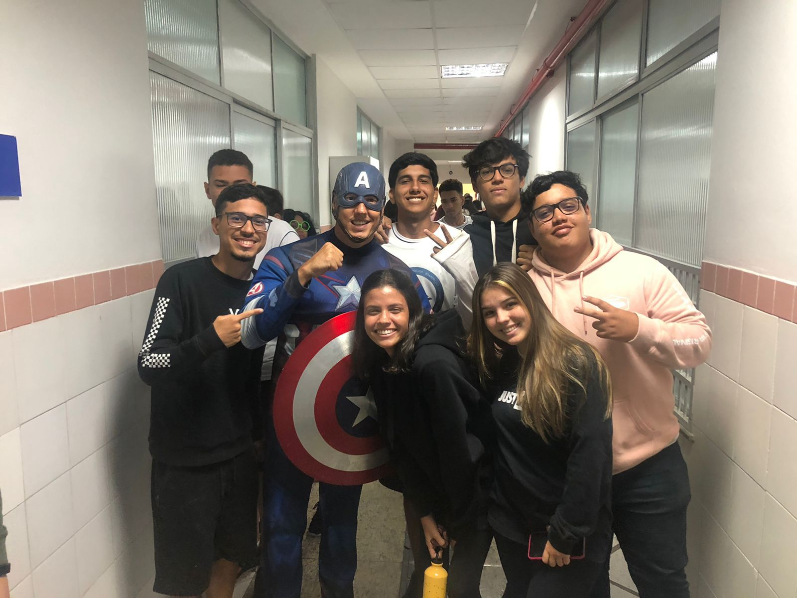
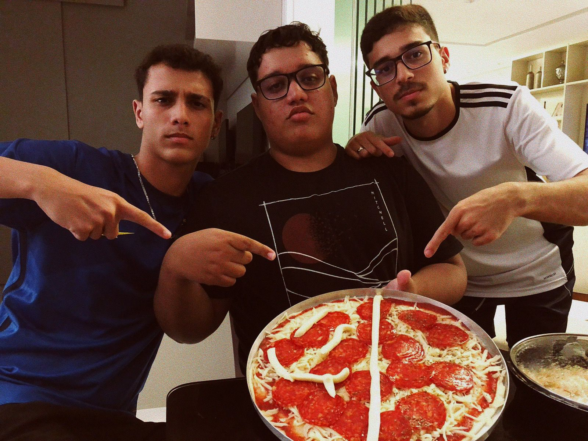
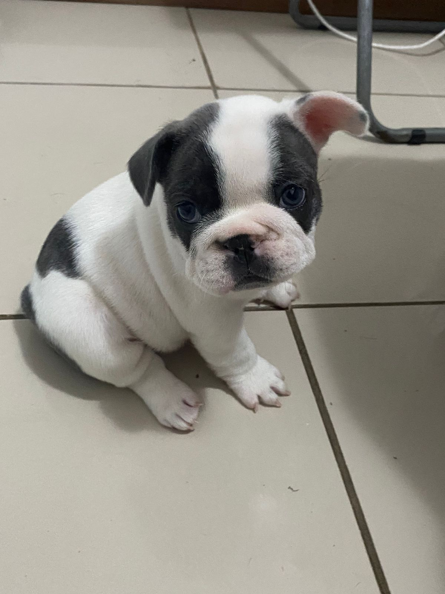

Esse foi o dia em que fui pegar minha habilitação no SAQ, depois de quase 3 meses no processo da auto escola, depois de perder no teste teórico por não estudar e de ter feito 20 aulas práticas insuportáveis, inclusive já teve aula em que o instrutor do meu lado estava dormindo e eu voltando de jaguaribe pela orla, mas estou vivo
Esse foi o dia em que ganhei a gincana do meu colégio no 2 ano do ensino médio, em 2022, foi algo muito especial por conta que no meu colégio que era o Integral a cultura da gincana é muito forte e eu e meus amigos caímos de cabeça nessa aventura e conseguimos vencer, foi uma gincana muito especial por conta que era a volta da gincana pós pandemia e era a 30 gincana do colégio, por mais que eu continuei fazendo gincana esse ano foi o mais especial e ainda conseguimos vencer
Esse dia foi a minha formatura do Ensino Médio, não tem todos os meus amigos na foto, mas ela foi uma das mais legais do dia, esse dia foi muito bom e também foi o dia de longe que fiquei mais alterado, a festa foi logo depois da solenidade do colégio e foi uma das melhores festas que ja fui
Não lembro muito desse dia pra falar a verdade, mas gosto muito dessa foto, eu, meu pai e minha madrasta quando fomos em uma reserva florestal no litoral norte, fizemos uma trilha, conhecemos uma sala com varios animais empalados e animais conservador em potes, esse momento da cobra foi antes da trilha e eles tem 2 cobras la, e alternam entre elas para as visitas
Esse dia foi quando eu ganhei meu primeiro jogos internos no colégio, foi no terceiro ano, demorei pra ganhar, mas minha sala nunca foi a melhor nos esportes, sempre fui da sala dos inteligentes
Esse dia foi na semana das minhas volta as aulas do terceiro ano e o colégio tinha contratado esse capitão américa para o fundamental I e ai paramos ele no corredor e pedimos uma foto
Esse foi um dos micos do terceirão e um dos poucos em que participei, tivemos essa ideia ai com meu amigos e deu certo, estavamos em dúvida entre 2 trios de personagens e escolhemos esse, mas não lembro qual era o outro
Esse dia nos reunimos em uma noite de jogos e fizemos pizzas, essa foi uma das que eu fiz com os dois da foto e foi a segunda melhor pizza da noite, porque não tinha como ganhar da pizza com camarão
Esse foi um churrasco do grupo de amigos na praia do flamengo e ao mesmo tempo um reencontro com nosso amigo que foi morar em BH (o de azul mais claro) e ele veio para salvador passar a virada de ano e nós reunimos antes do natal para resenhar
Esse é o mais recente de todos, foi o dia em que a minha terceira cachorrinha chegou, tenho 2 femeas que são bulldog frances e 1 macho que é um poodle, ele sinceramente não gosta muito das duas, não gosta de outros cachroros na verdade, a mais velha ele ja acostumou, mas essa pequena ainda não
